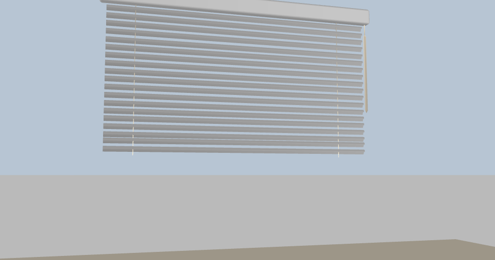
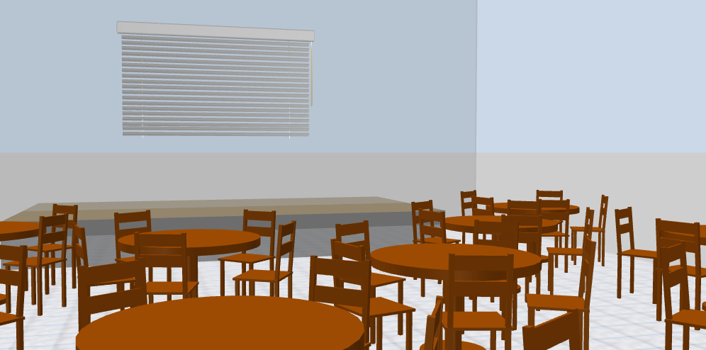
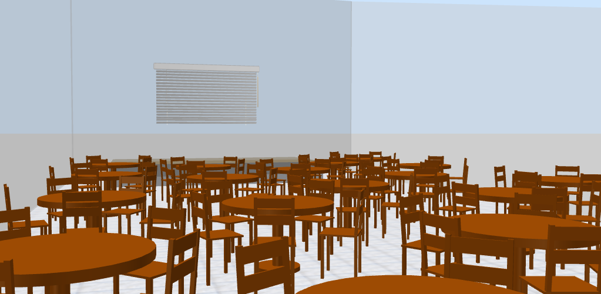

Speaker Infos
We also provided lots of information before via mail. But we know. Just in case there are any open questions we're trying to collect all information you need on this webpage. If you have an question which is not answered here please do not hesitate to drop us a mail ole@socoded.com or thorben@socoded.com
First things first, we already mentioned it in our very first mail. But better hear it twice. The most important information at a glance:
- All sessions are 30 minutes long
- There will be no Q/A (a.k.a: please hang out with the attendees at our awesome bar and hack with them on any questions that might come up)
- You must use our presenters computer
- There will be a presenter remote
- Your slides must be 1440x1080px
What else?
All our talks will be recorded and will be released for free right after the event. Plus we're partnering with some local video geeks so that we can stream your talk to the bar and have almost zero post-production.
I assume your all set with your slide at this moment. In case your not because your struggeling with any of this constraints please contact us. We can provide you some template pre-configured with the correct resolution:
And please fill out this form
The Stage
To give you a better idea of what our venue will look like, we put in all efforts and created this awesome rendered venue shots.   
Have a question or need help?
Again Thorben and Ole are there for you! We're here for every possible question that may pop up. Wether your searching for the best public transport connection or need a recommendation for a good restaurant. Or you are stuck with any non-english speaking locals, drop us a call WE ARE HERE TO HELP
- Ole: +4917641320791
- Thorben: +4917623550687